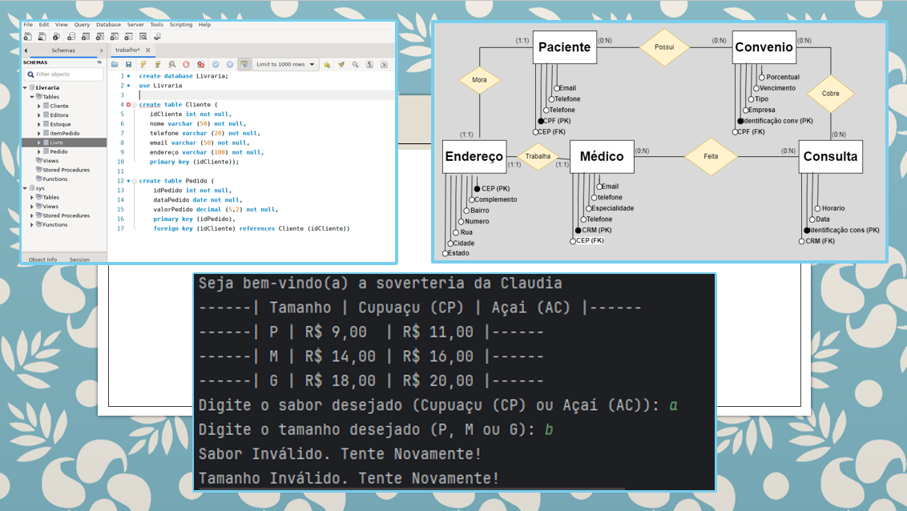

É um grande prazer lhe conhecer, eu me chamo Claudia Roberta e sou uma jovem programadora em busca de expandir minhas habilidades e conhecimentos. Nasci na cidade de impatinga (MG) e me mudei para Santa catarina quanto completei 18 anos de idade, a partir disto descobri não só minha paizani pela arte, mas também pelo mundo da programação e informática.
Agora com 23 anos, estou trabalhando como desenvolvedora de sites e programas, mas também atuo no mundo da arte, contando com desing dos mais diversos temas, como os dos proprios sites que crio, tambem gosto de ler e desenhar, mas no geral meus hobbies intercalam entre estes tópicos anteriormente falados, sou uma pessoa comunicativa e curiosa, conte comigo caso seu plano seja elaborar grandes projetos! Ficarei feliz de lhe ter como meu cliente e disposta a dar meu melhor para realizar umserviço que seja de seu agrado
Estarei deixando aqui algumas demonstrações de meus antigos projetos para que possa avaliar, caso se interesse, basta entrar em contato para fecharmos orçamento e decidir o que será feito, meus serviços incluem uma variedade de opções que caberá a voçe decidir qual se adequa melhor ao que voçê precisa.
TopoPossuo ao todo dois anos de carreira, formada em Análise e desenvolvimento de sistemas e concluente de dois cursos profissionalizantes dentro da área da informatica, certificação em programação python e html. Conto com máquinas de alta qualidade que me permitem atender meu cliente com tamanha profissionalidade e cuidado, respeitando todos os seus direitos e vontades quanto ao serviço.
Conto com alguns serviços feitos por mim duante minha carreira, como banco de dados e protótipos de venda
